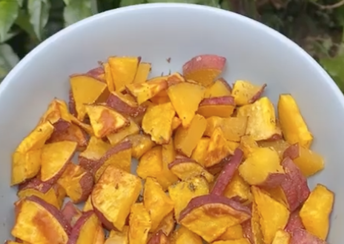

Chips de camote
Chips de camote

Para hacer estos deliciosos chips de camote vas a necesitar:
🍠 4 Camotes pequeños
🍠 Sal
🍠 Cúrcuma
🍠 Paprika
🍠 Pimienta
Procedimiento
🍠Cortamos el camote y lo colocamos 5 min en agua hirviendo.
🍠 Yo le agregué sal, cúrcuma, paprika y pimienta.
🍠 Lo pasamos a un recipiente.
🍠 Agregamos un poquito de aceite en spray, luego añadimos ajo en polvo y tomillo.
🍠 Mezclamos muy bien y llevamos a la freidora de aire por aprox 10 min a 180 grados C. Esto depende de qué tan tostados los deseen.
El intercambio total de la receta es:
4 harinas.
Ingresá acá para volver al menú principal:
| Menú principal |